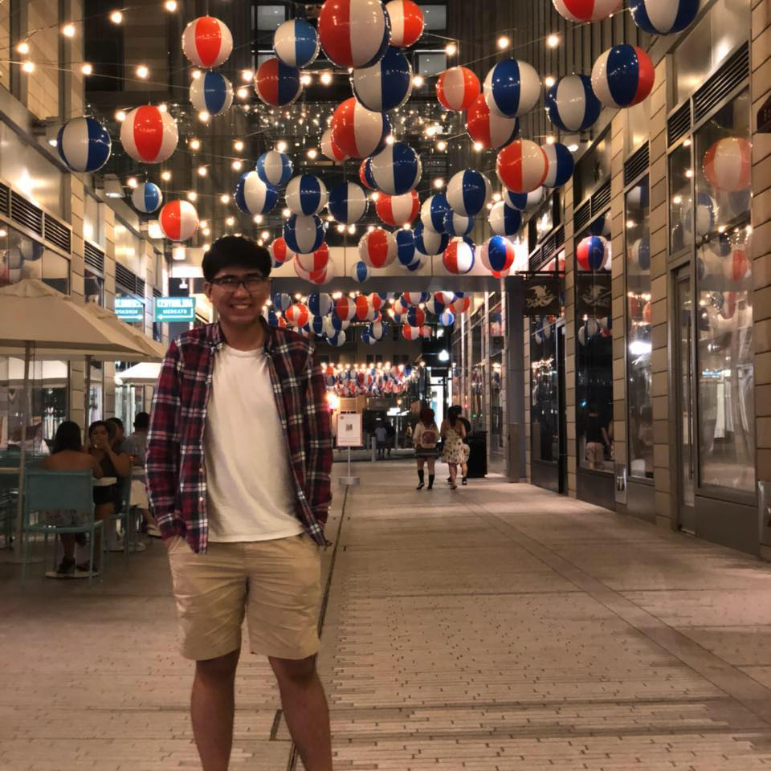

Brian Do
As of this edit (09/27/2021), I am 22 years old. I was born and raised in Vietnam for four years and then I moved to the United States. Throughout Elementary school, I had a difficult time learning English that I was in the ESOL (English to Speakers of Other Languages) program until I graduated Elementary School. Or so I thought. In seventh grade I was put into a class called Read180 as a chosen elective to improve my English for another year. This was frustrating to me because I was not allowed to partake in any other elective that I would enjoy like Auto Tech or Art. I then proceeded to graduate Middle School and then High School. Right now, I am attending George Mason University as a Senior and studying Information Technology (IT) with a concentration of Web Development and Cyber Security. Currently focusing more on graduating and finishing my last two semesters here at George Mason University while also looking for a part time job related in the field of IT to gain some experience and save some money to have for myself.
Strengths that I have is that I am a really fast learner. I like to learn more when I find something I am passionate for. I have been told I am a good listener as well. I listen well to my friends who are having a tough time or need to vent as well as instructions that need to get things done and what to do in the future. I am a Team Player too. I like to help out my peers and anyone else who have issues with whether it is just being there for them, assisting them, or teaching them a skill that I know. One of my hobbies is playing Video Games and in the games that I play, most of them are multiplayer. In order to win and defeat my opponents I have to communicate well and understand my teammmates and others opinions and play along with them.
Weaknesses that I have are that I am very shy. The thing I most regret in my time of the University is that I have not really made an effort to make any friends. Yeah, I have some friends I know because of classes. But I have not talk to them in a while or talk to them out of class. I only talked to them because they were in my class and I connected well with them. This year, I am attempting to be more less shy and be more proactive in making more friends, getting to know people, and to public speak better as well. This will help me improve my interview skills as well to make me seem more confident in myself and to not talk with stutters and a quiet voice.
Here are my projects that I have completed, learning, or working towards. Currently I am learning Front-End Web Development, Python, and Machine Learning. I will be mainly sharing my Front-End Web Development here. Mainly it will be HTML, CSS, JavaScript, JSON, and XML.